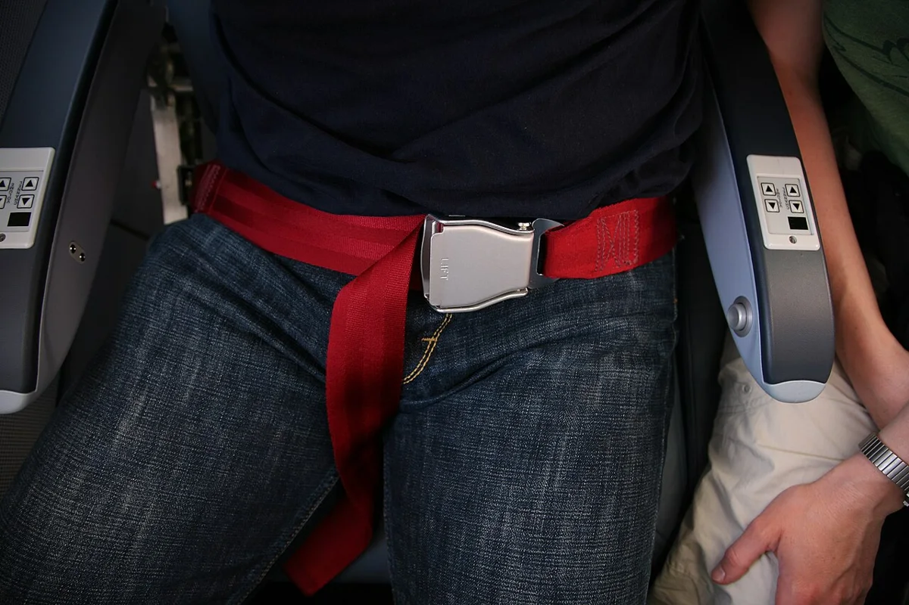
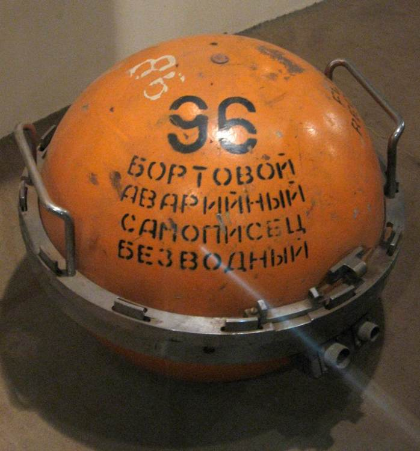
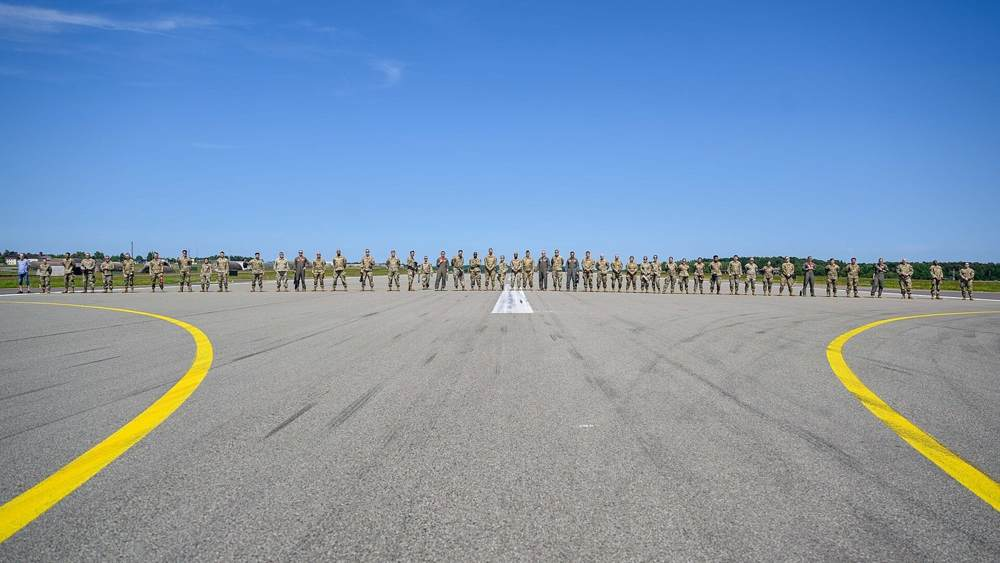
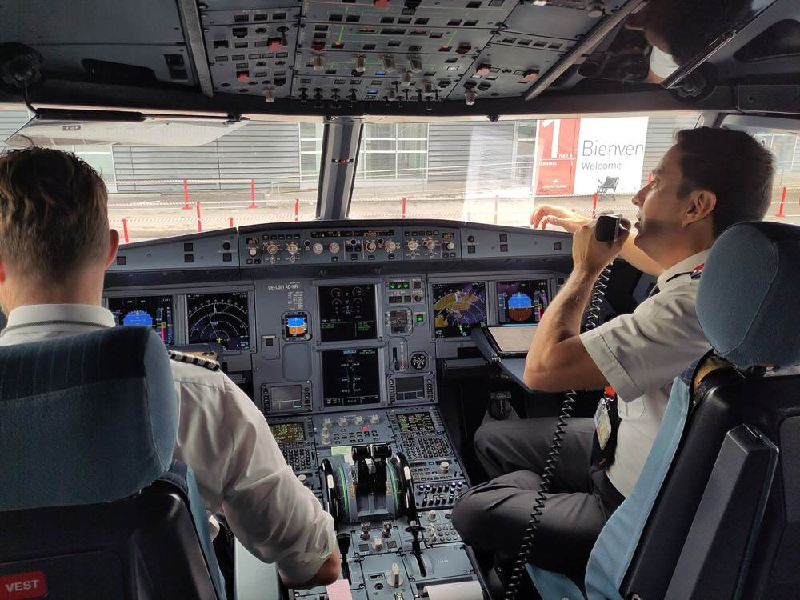

Daniel Schwen · Wikimedia Commons · CC BY-SA 4.0. Tamaño y formato adaptados para la web.

01 / Seguridad aérea
Mitos y realidades
Cinco creencias sobre volar, frente a la evidencia.
☰ Leer el artículoMás allá del vuelo / Blog académico
Comprender el riesgo. Conocer las protecciones. Aprender de la experiencia.


Daniel Schwen · Wikimedia Commons · CC BY-SA 4.0. Tamaño y formato adaptados para la web.
01 / Seguridad aérea
Cinco creencias sobre volar, frente a la evidencia.
☰ Leer el artículo
Russianname · Wikimedia Commons · CC BY 3.0. Encuadre adaptado para presentación.
02 / Seguridad aérea
Qué aportan los registradores a una investigación.
☰ Leer el artículo
U.S. Air Force photo by Airman 1st Class Gretchen McCarty · Wikimedia Commons · Public domain. Encuadre adaptado para presentación.
03 / Seguridad aérea
Prevenir daños empieza con observar y reportar.
☰ Leer el artículo
Exilexi · Wikimedia Commons · CC BY 4.0. Encuadre adaptado para presentación.
04 / Seguridad aérea
La seguridad se construye con coordinación y supervisión.
☰ Leer el artículoExplorar
Actividades con retroalimentación para aplicar lo aprendido sobre prevención.
Resolver actividadesSíntesis visual
Una explicación visual del vínculo entre evidencia, investigación, prevención y personas.
Ver infografíaEste proyecto del grupo IAM24-07A relaciona fuentes científicas e institucionales con cuatro perspectivas sobre la seguridad aérea.
Conoce la misión, la visión y el equipo
.jpg){kind=link}